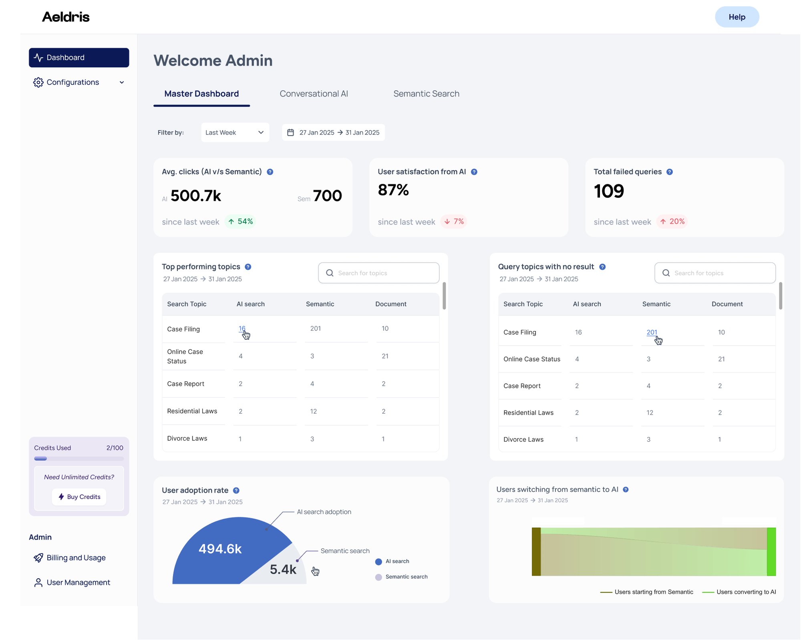

METHODOLOGY
Admin Dashboard Example

AI DXP Workflow
1
Assess & Set Objectives
Identify challenges and define clear goals with tailored approach
2
Organize Resources
Structure data into actionable formats for integration
3
Configure Key Components
Align models and embeddings with business outcomes
4
Establish Secure Connections
Ensure smooth data flow through API integrations
5
Refine & Improve
Validate, test, and optimize continuously
6
Scale with Growth
Reuse resources, reduce redundancy, maintain consistency
Semantic Search Workflow
- User submits natural language query
- Query converted to vector embedding
- Vector database performs similarity search
- Results ranked by relevance and metadata
- Formatted responses returned to user
- Interactions captured for improvement
Conversational Assistant Workflow
- User initiates or continues conversation
- System maintains context and history
- Relevant information retrieved from knowledge base
- Retrieved info used to generate accurate response
- Response filtered through safety guardrails
- Final response delivered to user